|
COMOD - Documentation by Skah v1.0
|
COMOD - newsletter templates
|
|
Created: 14 november 2011 By: Skah
Thank you for purchasing my e-mail newsletter templates. If you have any questions that are beyond the scope of this help file, please feel free to email via my user page contact form here. Thanks so much!
|
|
|
|
|
|
|
|
These templates are made with simple structure made of HTML tables. There are no image spacers or other graphic elements that you need to edit if you want to change the structure of templates. To change and manipulate table structure you only need text editor (try to use some free HTML text editor like Notepad++).
Basic structure of templates are made with three primary tables:
- First table (main table) is 100% width
- Second table (main centred table inside main table) we use to center the template content
- Third table (main content table inside main centred table) we use as container for content – this table is made of table rows that hold contents of our template (images, texts and other tables with content)
As you can see, the most important table is the third table (main content table) made with table rows. I like to call these table rows modules cause they represent a block of content. All that is needed to change the structure of existing templates, or to make new ones, is to understand how to manipulate and use these table rows (modules). Read more about modules and how to use them...
Note: in case of templates “newsletter-1”, “newsletter-2” and “newsletter-3” certain rows of third table that holds content are divided into two columns, so you'll not be able to insert any existing content module in these table rows, but you can read here how to manipulate with content of these columns...
Inside HTML code of templates and modules you can find comments that will help you to use and edit content and structure of templates. Important elements (table rows and modules) are marked with starting (START module) and closing (END module) comment.
|
MODULES - (table rows with pre-made content) |
back to top |
|
|
Modules are actually rows of third table (main content table) that holds blocks of content. We can easily add or delete these blocks from existing templates, or move them between templates to get desired content structure. Each module is marked with starting (START module) and closing (END module) comment.
|
EXAMPLES:
|
|
1. How to delete module (table row) from existing template:
Assume that you want to delete last article in template “simple-news-2”...
> Open file “simple-news-2” in text editor and go to line 240. You’ll see starting comment for last article (see picture).
> To delete module (last article) you must find ending comment of that module. In this case ending comment is on line 288.
> Now delete line 240, line 288 and everything between them. In this way you will delete module that holds last article.
Note: after deleting module you will have “gray thin divider” module before footer module. Delete it if you want...
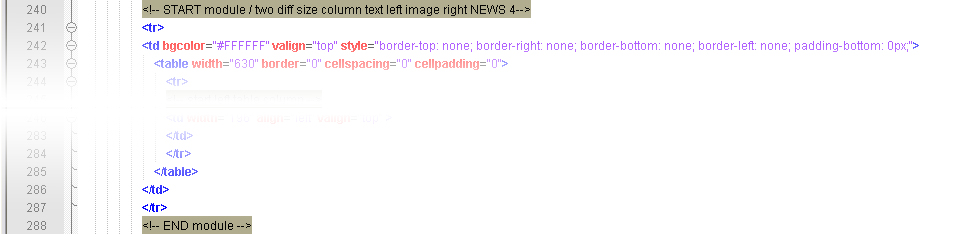
|
|
2. How to transfer modules (table rows) between existing templates:
Assume that you want to copy module of first article from template “newsletter-5” and place it at begining of “simple-news-3” above current first article...
> Open files “newsletter-5” and “simple-news-3” in text editor.
> Go to blank line 65 in template “simple-news-3” (see picture).
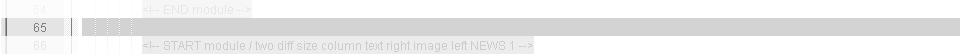
> Now go to line 66 in template “newsletter-5”. Select and copy first article module: lines 66, 112 and everything between them (see picture).
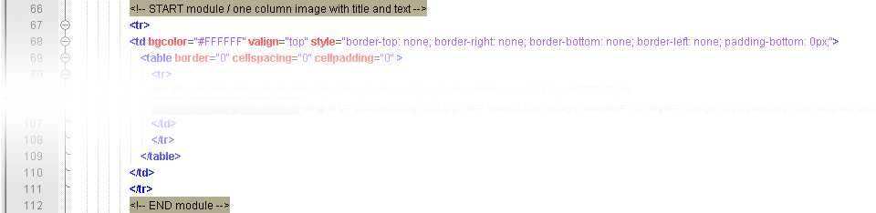
> Paste selected from template “newsletter-5” on blank line (65) in template “simple-news-3”.
> In same way you can add divider modules below new article...
|
|
3. How to create you own template using modules (table rows) from existing templates:
Assume that you want to create template with content structure completely different from existing templates...
> Open file “-BLANK-ribbon” in your text editor. This blank template already has inserted module with header navigation, header and footer. Go to line 66 where is inserted comment --INSERT MODULES HERE-- (see picture). This comment is placed between header and footer modules.
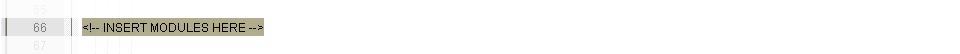
> Now you can copy any existing module (table row) from any existing file.
For this example I will use three modules from next files:
dark gray section header from file 'events-1'- lines: 66 > 79
one column image with text from file 'simple-news-1'- lines: 66 > 125
three column content from file 'newsletter-4' - lines: 188 > 278
> Select and copy above listed modules (comment lines and everything between them) and paste them one after other in “-BLANK-ribbon” file on line 66 where is inserted comment --INSERT MODULES HERE--. If you have used above listed modules like I did your template should look like this:
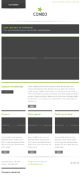
Note: in same way you can insert horizontal dividers between inserted modules...
|
COLUMNS - (table rows divided into columns) |
back to top |
|
|
Note: only for files "newsletter-1", "newsletter-2" and "newsletter-3" (in "newsletter-3" from line 152 > 229 )
In these template files we have used the third table (main content table) row divided in two columns. We can’t use existing content modules here, but the principle of adding or deleting parts of content is not so different then working with modules.
As you can see in examples below, you can delete, duplicate or move existing table rows with content to get desired content structure.
|
EXAMPLES:
|
|
1. How to delete news from wider column:
Assume that you want to delete first article from wider column in template “newletter-1”...
> Open file “newsletter-1” in text editor and go to line 157. You’ll see starting comment for first article (see picture).
> To delete first article you must find ending comment of that article. In this case ending comment is on line 184.
> Now delete line 157, line 184 and everything between them. In this way you will delete table row that holds first article.
Note: after deleting first article you will have divider above new first article. Delete it if you want...
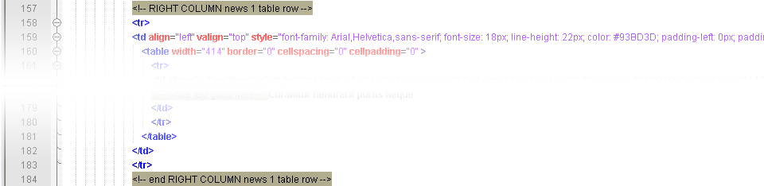
|
|
2. How to add news in wider column:
Assume that you want to add another article in template “newsletter-1”...
> Open file “newsletter-1” in text editor and go to line 266. You’ll see ending comment for third article.
> Now create blank line 267 after line 266. In that place we will place fourth article (see picture).
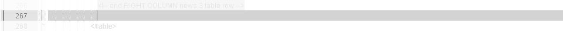
> Now simply copy third article. Third article is placed between comment lines 239 and 266. Select and copy these lines and everything between them.
> Paste selected on new blank line (267) and save document. You’ll see duplicated article at bottom of your template.
> Edit copied comment lines and article content...
|
|
3. How to move content in narrow column:
Assume that you want to move list in middle of narrow column and place it after small images in template “newsletter-1”...
> Open file “newsletter-1” in text editor and go to line 148. You’ll see ending comment for small banners table row.
> Now create blank line 149 after line 148. In that place we will move table row with list (see picture).
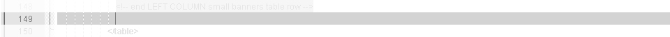
> Now find table row with list in narrow column. It’s placed between lines 95 and 120. Select and copy these lines and everything between them.
> Paste selected lines on blank line that you have created. Don’t forget to delete old list (lines 95, 120 and everything between)!
|
|
|
|
Most modules (table rows) contains some kind of 'FEATURED TEXT' boxes. Maybe you don't need them or you want to place them at different place inside module. This examples will show you how to delete them or move them around, and if you want to know how to style them go to next section CSS code and how to style elements.
Usualy, the 'FEATURED TEXT ' boxes are marked with starting comment (start table row with FEATURED TEXT ) and ending comment (end table row with FEATURED TEXT ).
|
EXAMPLES:
|
|
1. How to delete 'FEATURED TEXT ' box:
Assume that you want to delete box of first article in template file “simple-news-1”...
> Open file “simple-news-1” from GREEN folder in text editor and go to line 86. You’ll see starting comment for 'FEATURED TEXT' box. Ending comment is placed on line 98.
> To delete box just delete lines 86, 98 and everything between them (see picture).
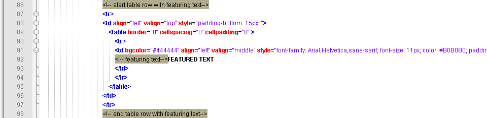
Note: Sometimes this boxes are not marked with starting or ending comments (side columns in newsleter-1 / newsletter-2) but you can delete them in same way (delete table row that holds comment 'FEATURED TEXT ' - see red box in picture).
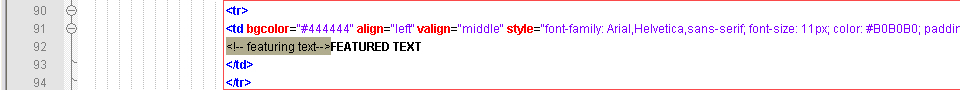
|
|
2. How to move 'FEATURED TEXT' box at different place:
Assume that you want to move 'FEATURED TEXT ' box from left column in template "simple-news-3" to the right column (above title of first article) in same template...
> Open file “simple-news-3” from GREEN folder in text editor, go to line 97 and create blank line 98 (see picture).
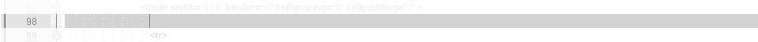
> Now copy lines 73 (starting comment of 'FT' box), 85 (ending comment of 'FT' box) and everything betwen them (see picture) and then paste copied on blank line 98. After that you can delete lines 73, 85 and everything between to remove box from left column.
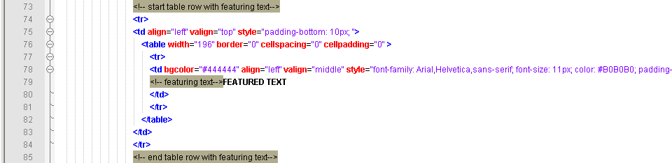
Note: Sometimes when moving boxes you'll have to adjust their column style and/or paddings of neighbouring objects...
|
|
|
|
All CSS styling is made inline. You can easily change CSS properties with any HTML text editor directly in template files (try to use free HTML text editor Notepad++).
|
EXAMPLES:
|
|
1. How to change existing CSS property of text:
Assume that you want to change display of regular text of first article in template file “newsletter-1”...
> Open file “newsletter-1” from GREEN folder in text editor and go to line 172. You’ll see CSS style properties inserted directly in table column (see picture).
> Change or add style properties... try to replace complete style properties with this one: font-family: Georgia,serif; font-size: 12px; line-height: 18px; color: #888888; padding-top: 10px;
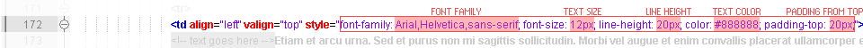
|
|
2. How to change or add CSS property to text link:
Assume that you need to change display of “View online” text link for first article in left column in template file “portfolio-1”...
> Open file “portfolio-1” from GREEN folder in text editor and go to line 104. You’ll see line with text link “View online” (see picture).
> Change or add style properties to text link... try to replace complete style properties with this one: color: #FF6600; font-weight: bold; text-decoration: underline;
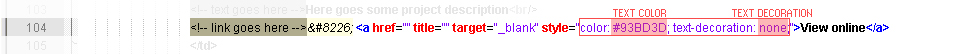
|
|
3. How to style 'featured text' box:
Assume that you want to change look of colored “ANNOUNCEMENT” box of first article in right column in template file “newsletter-2”...
> Open file “newsletter-2” from GREEN folder in text editor and go to line 194. You’ll see line with column properties (see picture).
> Try to replace values with this ones:
bgcolor: #FF6600
align: right
all pading values replace with: 10px
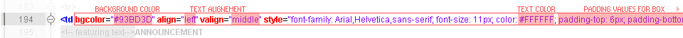
|
|
4. How to style borders:
Assume that you want to change look of colored border of first article in template file “newsletter-4”...
> Open file “newsletter-4” from GREEN folder in text editor and go to line 76. You’ll see line with table column properties (see picture).
> Change or add style properties... try to replace bottom border values with this one:
dotted 2px #FF6600
Note: If you want to remove border you can replace border width value (10px) with zero value (0px) or simply delete entire border style (border-bottom: solid 10px #93BD3D;)!
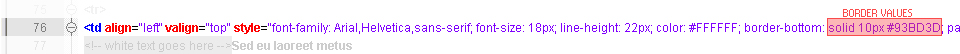
|
|
|
|
For correct display of templates and modules don't change the width size of images (images, banners, dividers, buttons, thumbnails...). Structure of content and tables is adaptive to the height of those pictures so it doesn’t matter how high they will be.
Layered PSD files of graphic elements used in templates and modules (ribbons, dividers, icons, buttons...) you can find in folder “PSD elements”.
Note: If you change the location or name of images used in templates don’t forget to change paths in HTML template files!
In case that you don’t know how path to image looks like see picture:
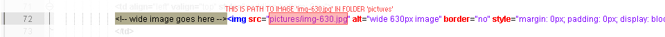
|
Using templates in Mailchimp and Campaign Monitor |
back to top |
|
|
U can use these templates in Mailchimp and Campaign Monitor.
Templates will work and display fine when you import finished templates into MC or CM but there are no MC or CM pre-defined merge tags inserted in templates!
How to import and use these templates in Mailchimp and Campaign Monitor find in examples below.
|
EXAMPLES:
|
|
1. How to import in Mailchimp
> First of all you need to prepare your e-mail template locally. Edit content of template: change texts, insert pictures...
> Now ZIP your finished template (HTML file) together with all images (or folders with images) that you want to display inside template (your content images and other graphic elements displayed inside of template).
Important: Name and location of image that you want to display in your newsletter after upload must correspond to src path of that image inserted in HTML template file! For example: if you have used image “sunshine.jpg” from folder “pics” in your HTML template file (src path will look like “pics/sunshine.jpg”), you must include in ZIP file complete “pics” folder with image “sunshine.jpg” in it.
> Go to your Mailchimp account... click on “My templates” link > click on “Code custom templates” > click on “Import ZIP file” > select your prepared ZIP file and upload it.
> You can save your template or if you want you can fine-tune it in “Code view” window before saving.
|
|
2. How to import in Campaign Monitor
> First of all you need to prepare your e-mail template locally. Edit content of template: change texts, insert pictures...
> Now ZIP your images (or folders with images) that you want to display inside template (your content images and other graphic elements displayed inside of template).
Note: Campaign Monitor requires single-click “unsubscribe” link in mail newsletter. So, before you upload everything you’ll need to ad pre-defined tag in HTML code of your template if you don’t want to see their ugly “unsubscribe” link at bottom of your e-mail newsletter. How to add unsubscribe tag:
> Open your template in text editor... now find text “unsubscribe” that is shown at top of your newsletter... if you used template “newsletter-4” it will be on line 34 together with other links at top of your template (see picture).
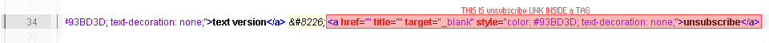
> At the end of line 34 you can see link tag: <a href="" title="" target="_blank" style="color: #93BD3D; text-decoration: none;">unsubscribe</a>
...replace that code with following: <unsubscribe><span style="color: #93BD3D; text-decoration: underline;">unsubscribe</span></unsubscribe>
> Save template and go to your Camapign Monitor account... create your campaign (enter required data in step 1.) > in step 2.1. choose “HTML and plain text” and click “next” > in step 2.2. select your prepared template (1.HTML page) and ZIP file with images (2. All other files in ZIP format) then click “Get my campaign” > your files will be uploaded and after successful upload you’ll be able to see link “preview your template” > after that do everything needed to finish creating your campaign.
> After crating your campaign you can fine-tune your template in “edit my HTML” window
|
|
|
|
- Don’t forget to enter title and alt attributes for links and images!
- Don’t forget to change the title tag of document before sending mail!
- Don’t forget to fill description and keywords tags before publishing newsletters on web!
|
|
Once again, thank you so much for purchasing these templates. As I said at the beginning, I'd be glad to help you if you have any questions relating to this theme. No guarantees, but I'll do my best to assist. :)
Skah
|